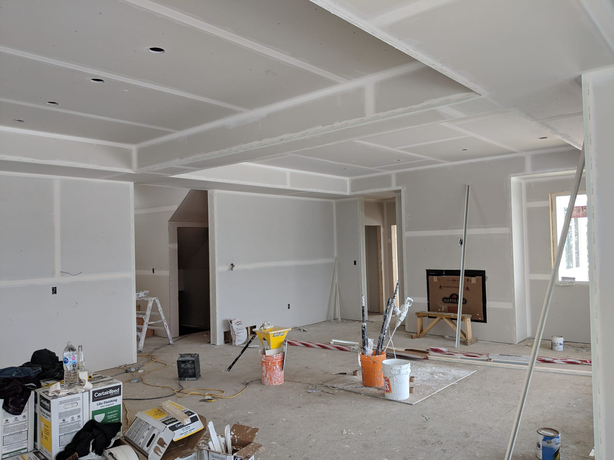
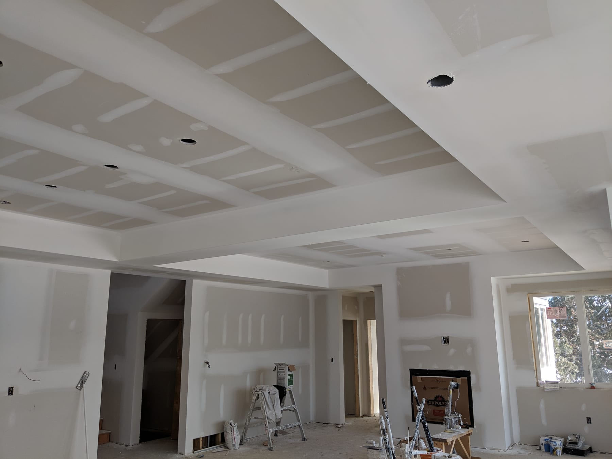

Drag the handle. Watch it disappear.
Seven rooms, photographed in the middle of the job and again at hand-off. Same space, days apart. Pair with the finished-work gallery if you want to skip ahead to the after.
From boarded frame to finished floor.
Four-stage project photographed through hang, tape, mud and hand-off. Same room, same angle.


Taped seams to a clean Level 4.
Heritage arched window, long rooflines, and a ceiling with a lot of joints — all flat under the lamp.
A pod of offices, handed off clean.
Interior walls framed inside an industrial shell — crisp corners under the exposed ceiling.
High ceilings, long sight lines.
Tall wall next to a double patio door — the kind of expanse where a small seam becomes a big problem.
Seams gone. Wall quiet.
Tall south-facing window — unforgiving light. The kind of wall that needs a skim if the taping isn't perfect.
Sharp corners, flat walls.
Three doorways cut into a single hall — every corner is a detail the eye finds when the lights go on.
Paint-ready, move-in clean.
Same room. Same light. One is freshly taped and mudded — the other is painted and ready to live in.
Browse the finished-work gallery, or tell me about your project.